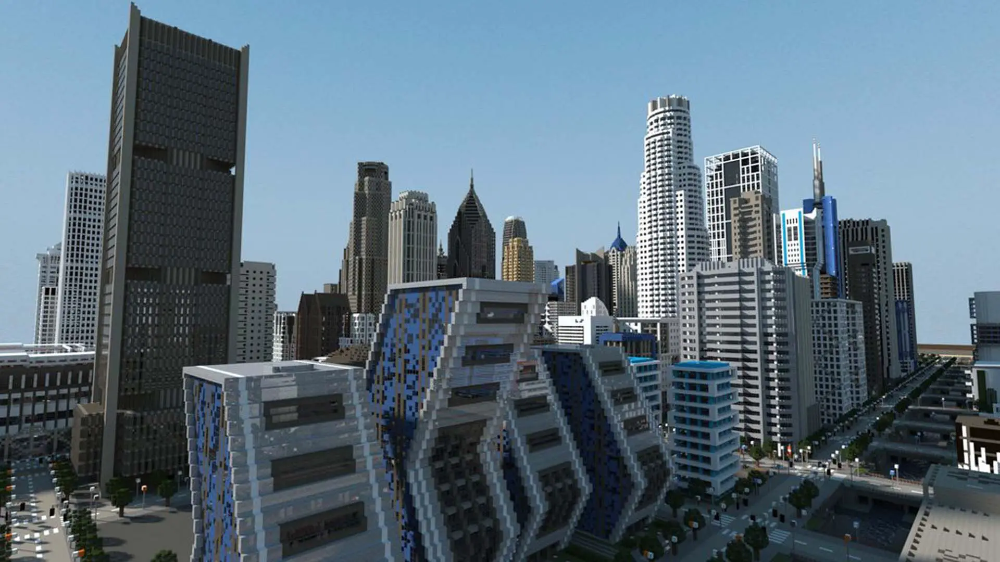
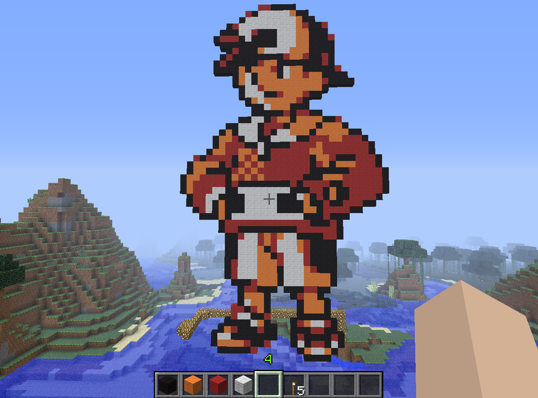

Modo criativo
O modo criativo do Minecraft é uma das modalidades mais populares do jogo, permitindo que os jogadores construam livremente sem se preocupar com recursos ou inimigos. Neste modo, os jogadores têm acesso a todos os blocos e itens do jogo, o que permite criar construções incríveis e complexas sem as limitações do modo de sobrevivência.
Uma das principais vantagens do modo criativo é a capacidade de construir estruturas muito rapidamente. Os jogadores podem usar comandos especiais, como o "fill", para criar grandes áreas preenchidas com blocos específicos, o que pode economizar muito tempo na construção. Além disso, o modo criativo permite que os jogadores voem, o que torna a exploração do mundo do jogo muito mais fácil.
Outra grande vantagem do modo criativo é a liberdade para construir sem medo de perder tudo. No modo de sobrevivência, os jogadores correm o risco de perder tudo o que coletaram e construíram caso morram, o que pode ser frustrante. No modo criativo, os jogadores não precisam se preocupar com isso, pois não há monstros e não há necessidade de coletar recursos para sobreviver.
Com o modo criativo, os jogadores também têm a oportunidade de expressar sua criatividade de maneiras ilimitadas. Eles podem construir réplicas de prédios famosos, construir seus próprios mundos imaginários ou criar novos designs de mobiliário. Alguns jogadores usam o modo criativo para criar incríveis parques de diversões ou montanhas-russas que desafiam a gravidade.
Os jogadores também podem usar o modo criativo para experimentar diferentes modos de iluminação e criar ambientes atmosféricos em suas construções. Com o acesso a uma ampla gama de lâmpadas e lanternas, os jogadores podem criar ambientes aconchegantes, misteriosos ou até assustadores, dependendo da sua intenção.
Outro recurso interessante do modo criativo é a opção de voar. Os jogadores podem voar livremente pelo mundo do Minecraft, o que permite uma visão ampla e detalhada de suas construções. Isso é especialmente útil para projetos grandes ou complexos, pois permite que os jogadores visualizem todo o projeto de uma só vez.
O modo criativo também pode ser usado para fins terapêuticos. A construção de estruturas no jogo pode ser uma forma de reduzir o estresse e a ansiedade, além de ajudar a melhorar a coordenação motora e a criatividade.
Além disso, o modo criativo do Minecraft pode ser usado como uma ferramenta educativa, especialmente para ensinar a programação e a lógica de computação para crianças e jovens. Existem vários projetos educacionais que usam o Minecraft para ensinar conceitos de programação, como o uso de comandos e loops para automatizar tarefas no jogo.

Além disso, muitos jogadores usam o modo criativo do Minecraft para criar construções inspiradas em filmes, jogos e outras obras de arte. Essas construções podem ser extremamente detalhadas e impressionantes, e são uma forma de homenagear obras que os jogadores amam.
